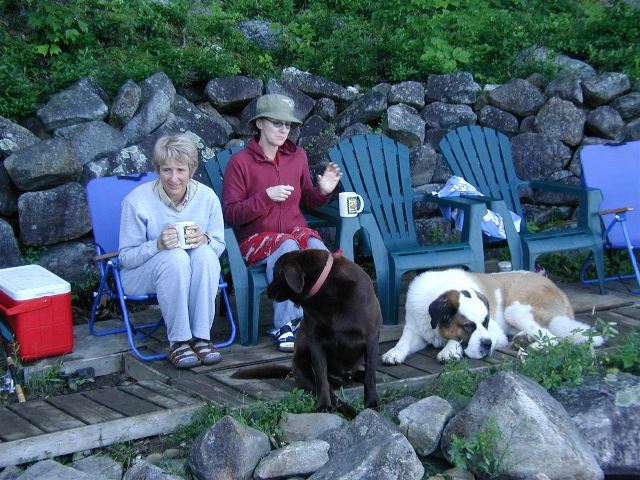

Photos of Loons at Loon Lake
Location: Rumney, NH
Date: July 3, 2005
A loon follows Basket from
across the lake.
"Did someone say loon?" --Bondo
Only a loon could be curious of
this bunch.

The fascination spreads.
Photo finish: Loon vs. Granola.
Loon wins!
"What a bunch of loons! I'm outta
here." --Loon
On on
Photos by Tinker